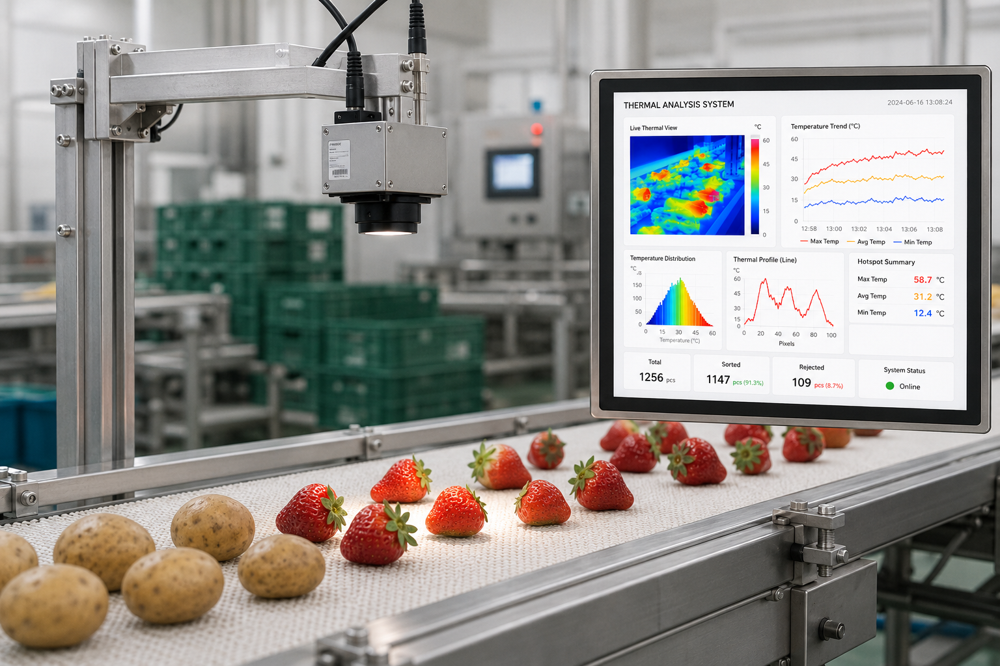

초분광·열화상 영상으로 당도, 수분(함수율), 경도, 중량, 착색 상태를 비파괴 방식으로 현장에서 즉시 판별합니다. 스마트팜부터 산지 유통 단계까지 품질 데이터를 표준화해, 선별·등급 판정의 정확도와 속도를 함께 끌어올립니다.

V자형 레일 이송 구조 위에서 부피·중량·착색·당도·수분·경도 측정 모듈을 필요에 따라 조합하는 모듈형 선별 플랫폼입니다. LWIR 국소가열 분석 모듈, 2번 반사 기반 착색 측정 모듈, 접촉형 인디케이터 모듈, 비접촉 복원 응용 모듈(단열 팽창 공기 기반), 마이크로 분광 센서 표면 투과 스펙트럼 분석 모듈 등을 AI 제어 시스템과 Plug & Play 자동인식으로 연결합니다.
농가 단위의 소규모 처리를 위한 Compact Type과, 산지 유통센터·APC(농산물산지유통센터)의 대용량 처리를 위한 Industrial Type 두 가지 폼팩터로 제공됩니다.
고객군은 개별 농가(Compact Type)와 산지 유통센터·APC(Industrial Type)로 나뉩니다. 충주 APC 현장 시장
조사 결과 APC 시장은 현재 외산 장비가 지배하고 있어, 국산 모듈형 대안에 대한 수요가 확인되었습니다.
수익 모델은 모듈·부품 단위 라이선싱과, AI 품질예측 엔진을 서비스형(SaaS)으로 제공하는 방식을
병행합니다.
실증·공동개발 파트너: 진영산업(AI 과일 선별), 한성티앤아이(비파괴 당도 선별), 한아(중량 선별·물류
분류), 이듐(작물 생육 측정), 에이오팜(TRL 6→7 현장실증, 2026~27).